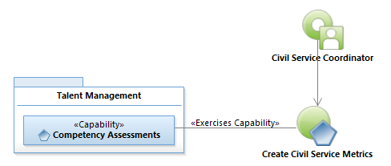
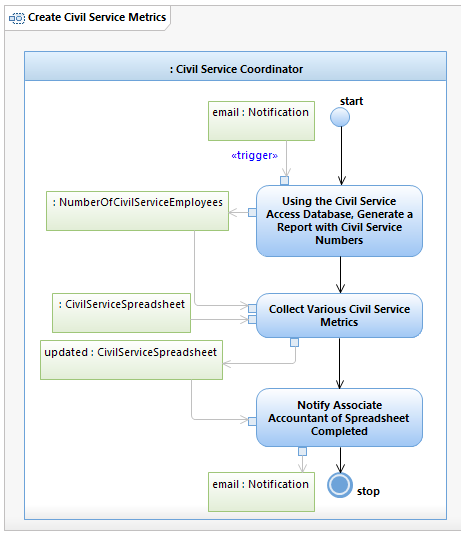

Use Case Model: Create Civil Service Metrics
Architect: First Last, IT Enterprise Architect
Date Last Modified: 11/25/2012
User Review: Barry Cook
Date: mm/dd/yyyy
Provide performance metrics based on requested pay periods (typically two).
Follow link to Role Definitions

Use Case Model: Create Civil Service Metrics

Activity Model: Create Civil Service Metrics